Design Experiences
This section documents my primary engineering design activities. Navigate through my projects and specific Concepts, Tools, Models, and Frameworks (CTMFs) below, categorized by their function within the FDCR lifecycle.
Praxis I: Hand-Held Broom Optimization
Background & Opportunity
This design brief outlines the limitations of the everyday hand-held broom (HHB), emphasizing the posed harm for individuals with mobility restrictions to pick up the broom when it has fallen. When individuals accidentally drop the broom or want to momentarily rest it to do another task, they would inevitably need to pick it up to continue their cleaning. The bending motion to pick up the broom from the floor can be uncomfortable for those with mobility issues, causing unnecessary stress to their limbs. The opportunity is to improve the current design of the HHB to inspire design solutions that prioritize accessibility and safety, preventing the broom from falling in the first place [5].
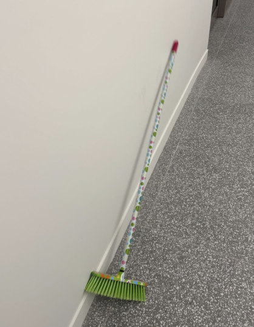
Reframing & Key Requirements
To ensure our design truly solved the problem, we established strict Requirements and Evaluation Criteria (ECs). The design needed to:
- Force Resistance: Withstand an accidental sideways force exerted at the top of the broom of at least 1.5 N when placed on white oak hardwood flooring [5].
- Retrieval Efficiency: Allow the broom to be retrieved from the design in under 5 steps [5].
- Compactability: Take up no more than 0.35m x 0.35m while not in use and placed down at any location in the room [5].
- Weight Limit: Weigh no more than 0.7kg in total, including any additional attachment used to permit retrievability from a neutral standing body position [5].
Diverging & Exploring Possibilities
Guided by our framing, we engaged in structured theoretical divergence to generate multiple potential solutions without committing to physical prototyping at this stage [5]. We developed four distinct high-level concepts:
1. Suction Cup

A foot-actuated nitrile suction cup that creates a firm seal with the floor.
2. Tripod Stand

A collapsible, three-legged aluminum system that deploys outward.
3. Weighted Base

A heavy, High-Density Polyethylene block attached to the broom handle.
4. Magnetic Stand

A standalone pole utilizing Neodymium magnets to hold the broom upright.
Converging & System Integration
We utilized a Measurement Matrix, Pugh Charts, and Pairwise Comparison to evaluate our theoretical designs [5]. While the Magnetic Stand was the fastest to retrieve (2 steps), horizontal force resistance was our most critical metric. Engineering calculations revealed the Suction Cup could withstand an incredible 14.33 N of horizontal force—vastly outperforming the others (which all withstood under 2.1 N) while remaining exceptionally lightweight at 0.471 kg [5]. Consequently, the Suction Cup was selected as the optimal recommendation.
The Final Design: Actuated Suction Base
This design consists of a moveable nitrile suction cup that allows the broom to be secured to the floor when not in use. When deployed using a foot-actuated handle, the suction cup is released overtop of the broom bristles such that enough rubber is protruding underneath to create a firm seal with white oak hardwood flooring, allowing the broom to be held upright.
Foot-Actuated Handle
A foot-actuated handle enables the deployment and retractability of the suction cup from a standing neutral position, eliminating annoyance or discomfort associated with bending. The handle is made of aluminum for its ideal characteristics.
Nitrile Material
Nitrile was chosen as the optimal material due to its increased tensile strength and resistance to scratches. Its high physical durability will help lengthen the lifespan of the design and allow it to withstand regular wear. Most nitrile compounds have a lower density compared to silicon, lowering the weight of the design and improving its performance against EC1.5. It also does not tend to scratch most surfaces, improving its performance against EC3.1.
Dimensional Optimization
The dimensions were chosen to satisfy R1.4, allowing the design to minimally extend outwards from the broomhead such that it does not compromise compactability (EC1.4). The width of the suction cup was hence chosen to be 35.00 cm, the maximum permissible width to ensure equitable testing against R1.2, allowing for the suction cup to extend outwards from the broomhead by approximately 3.34 cm. The following dimensions were calculated so as to keep this outwards extension roughly uniform along the entire perimeter of the broomhead, resulting in a length of 12.93 cm when viewed from the side and a depth of 2.00 cm, causing the total height of the design to be 18.73cm.
Influence of My Position & What I Learned
I entered this project heavily biased. Once I visualized the suction cup idea, I didn't want to challenge it, and I actively resisted the planning phase in favor of jumping straight into building [16]. My groupmates had to pull me back and enforce the divergence process.
Through this, I had a major realization: while the suction cup did ultimately win, structured divergence revealed that other designs (like the magnetic stand) actually met specific requirements better [5]. I learned the critical importance of extensive planning and evaluating options through rigorous metrics. You cannot just jump to a final design based on intuition; you must justify it. This perfectly encapsulates the "Practice" and "Timeout" phases of my design philosophy.
CTMFs Assessed (Praxis I)
-
1. Lotus Blossom Technique & The Perry Model
Description
The Lotus Blossom Technique is a structured brainstorming tool used to expand a central concept outward into multiple sub-concepts. We used this as our primary divergence tool to generate a vast, uninhibited array of solutions for the HHB splartz without overanalyzing feasibility (e.g., generating ideas ranging from magnetic stands to "robots that follow the broom") [16].
ApplicationI analyzed my experience using this tool through the lens of the Perry Model of Cognitive Development [13]. This model tracks intellectual growth from Dualism (believing there is only one absolute right answer) through Multiplicity and into Relativism (understanding that knowledge is contextual and multiple valid solutions exist).
 Fig 5: Lotus Blossom brainstorming technique mapped on a whiteboard during initial divergence [16].Critique & Effectiveness
Fig 5: Lotus Blossom brainstorming technique mapped on a whiteboard during initial divergence [16].Critique & EffectivenessWhile the Lotus Blossom successfully forced me out of my comfort zone, its primary limitation in this context was idea bloat. It generated an unnecessarily large number of ideas, many of which were highly impractical. Furthermore, while the Perry Model is an excellent reflective tool to assess my mindset, it suggests a strictly linear progression. In reality, I found that my cognitive state fluctuated; I would achieve Relativism during brainstorming, but occasionally slip back into Dualism when stressed and searching for a quick answer.
Impact on My Position in ContextCombining these two CTMFs catalyzed a massive shift in my design philosophy. Entering Praxis I, I was highly Dualistic—narrow-minded and entirely fixated on my initial suction cup idea [16]. The Lotus Blossom forced me to step back, take a "Timeout," and acknowledge the breadth of possibilities. It guided me toward Relativism, teaching me that engineering is rarely about finding the singular "correct" solution, but rather navigating multiple valid paths to find the most justified one.
Note to Future Self: The Lotus Blossom is powerful, but when time is constrained, there are more efficient, bounded diverging methods to use, such as Brainwriting or Morphological Charts, to prevent overwhelming idea bloat. Additionally, continuously use the Perry Model as a self-check—especially during high-pressure "game" scenarios—to ensure I am not slipping back into rigid, Dualistic thinking. -
2. Toulmin's Structure of Argument
Description
Toulmin's Structure of Argument is a philosophical and logical framework used to make reasoning explicit by connecting a Claim (an assertion) to Evidence (data) via a Justification or Warrant (the logical reasoning that links the two together) [14]. In engineering design, this tool ensures that parameters are not arbitrary, but are defensible and rooted in verifiable reality.
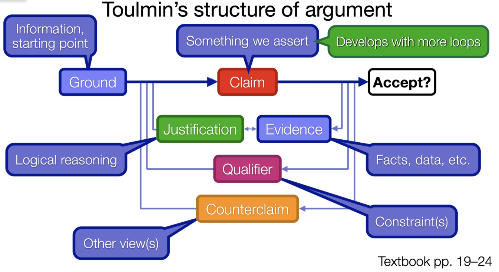
Fig 6: Toulmin's structure of argument connecting claims to evidence and justification [16].Application in Praxis IDuring our Praxis I project, we heavily utilized this framework for creating our Needs, Goals, and Objectives (NGOs). We had a goal we wanted to achieve, our secondary research provided the evidence to support those objectives, and our reasoning for our metrics acted as the justification [16]. For example, when framing the safety of our broom, our objective (Claim) was to minimize the increase in fine particulate matter (PM2.5). Our Evidence was derived from EPA epidemiological exposure-response data, which allowed us to scientifically Justify a rigid metric of ≤10 µg/m³ [5].
Critique & Effectiveness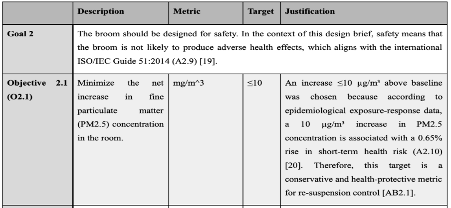
Fig 7.1: Toulmin's structure applied to define the overarching Safety Goal [5].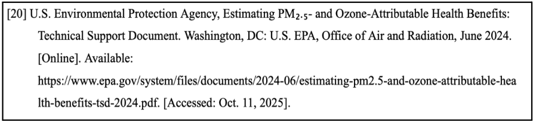
Fig 7.2: Toulmin's structure applied to establish the Objective metric [5].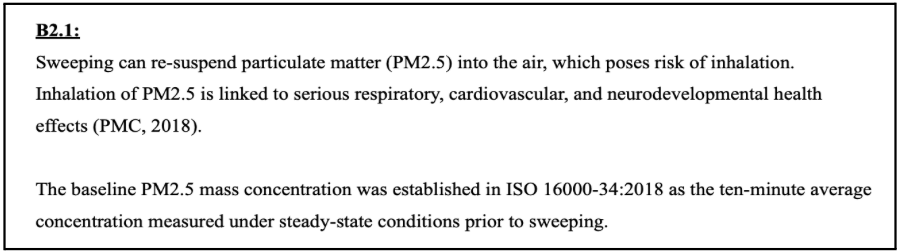
Fig 7.3: Toulmin's structure applied to justify the Evidence supporting the claim [5].Using Toulmin's Structure allowed our team to create clear, defendable, and measurable objectives grounded in shared reasoning. This made our objectives significantly more meaningful for us, and provided a transparent logic trail for stakeholders who might later design the solution [16].
Impact on My Position in ContextThis observation helped me learn that engineering decisions require justification, not just intuition. I realized that even when something is intuitively reasonable, it is not actually valid in a design context unless I can explicitly explain why it is reasonable and how I know. This completely shifted the way I approached research: instead of collecting information to fill space, I began collecting evidence with the direct purpose of supporting claims. I now see Toulmin's structure as an essential tool for making my internal reasoning explicit and understandable for others [16].
However, I did start taking this framework too much to heart, to the point that I always felt like there was a "better" claim to be made or stronger evidence to be found. This relentless pursuit of the perfect argument actually caused me to temporarily lack confidence and hesitate in my decision-making [16].
Note to Future Self: Continue to use this as an outline for everything. With any design decision, you are making an engineering argument that needs to be backed up with evidence and justification. This is fundamentally important for outlining a design project through framing, diverging, converging, and representing. It is the absolute core of engineering design. However, learn to trust your current evidence so you do not get paralyzed searching for perfection. -
3. The CRAAP Test
Description
The CRAAP Test is a framework used to critically evaluate sources based on Currency, Relevance, Authority, Accuracy, and Purpose [15]. In engineering design, it serves as a critical filter to ensure that the data driving your design decisions—such as setting performance metrics or safety limits—is trustworthy, methodologically sound, and contextually appropriate.
Application in Praxis IDuring the framing phase of our project, we established Requirement 1.2: the design must withstand an accidental sideways force of at least 1.5 N. When secondary research failed to provide a credible, contextual standard for a falling broom, we were forced to generate the evidence ourselves through primary static-equilibrium physics calculations [17].
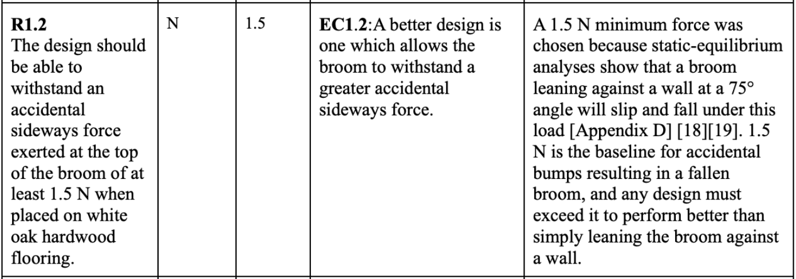
Fig 8: Requirement 1.2 establishing the 1.5 N minimum force threshold [17].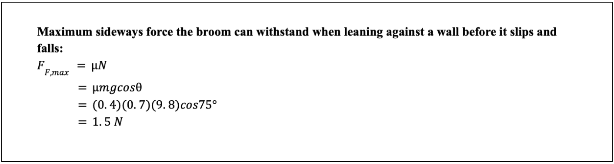
Fig 9: Primary static-equilibrium calculations used to determine the 1.5 N force metric [17].I subsequently applied the CRAAP test directly to evaluate my own primary research data to verify its validity as a metric compared to alternative secondary sources [17].
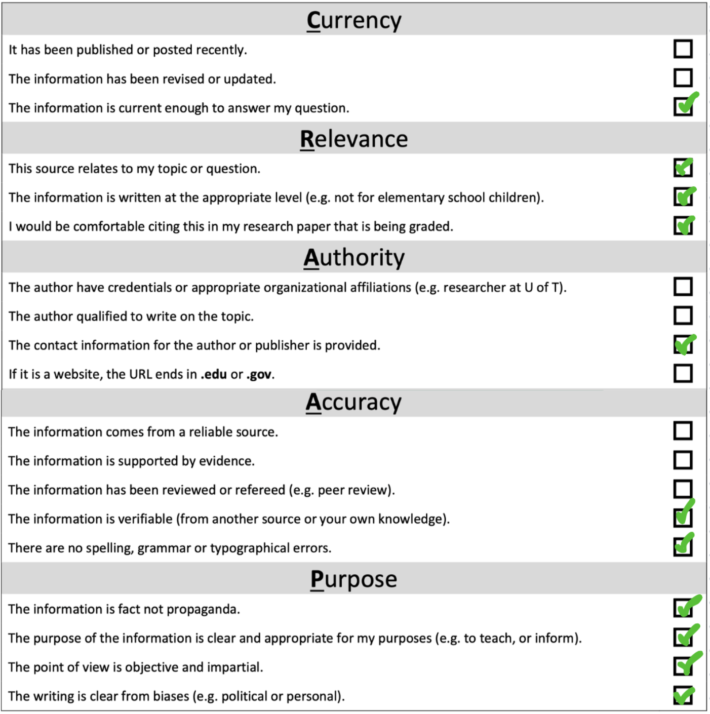
Fig 10: Application of the CRAAP Test to evaluate the credibility of the primary physics calculations [17].Critique & EffectivenessThe CRAAP test proved highly effective for comparative analysis. When I evaluated the available secondary sources, they scored poorly on Authority and Accuracy—featuring unknown authors and no methodological justification. Applying CRAAP to my own primary research forced me to confront a vulnerability: I am a student making assumptions, not a certified expert, which limits my "Authority." However, the framework made it objectively clear that because my primary calculations were methodologically transparent and tied directly to our specific context (a broom at a 75° angle), they were significantly more credible than the obscure secondary alternatives [17].
Impact on My Position in ContextThis experience fundamentally reshaped my understanding of credibility in my "Volleyball Season" philosophy. During the "Practice" phase (Preparation & Framing), I used to believe that finding *any* published paper meant I had succeeded in my research. Now, I understand that credibility is not inherent—it must be earned and actively evaluated. This forced me to step up and recognize my own role as the "authority" when external credible sources are absent [17]. It cemented my understanding that robust engineering design requires transparent justification, explicit acknowledgment of uncertainty, and the courage to generate and defend your own evidence when the existing playbook falls short.
Note to Future Self: Try to default to high-quality secondary research when possible, as it is often more efficient and universally accepted to justify. However, rigorously use the CRAAP test for every piece of evidence. When secondary research fails that test, do not compromise the integrity of the design by forcing bad data to fit. Have the confidence to rely on your own engineering fundamentals to conduct primary research, clearly state your assumptions, and be prepared to defend your methodology [17]. -
4. Pugh Chart
Description
A Pugh Chart is a criteria-based decision matrix that utilizes relative scoring to compare concepts. One concept is established as the "reference" or baseline (scoring all 0s), and all other alternative concepts are scored as better (+), worse (-), or the same (0) against the established Evaluation Criteria.
Application in Praxis IDuring the "Timeout" phase of our project, we utilized Pugh Charts to converge on our final design. I initially heavily favored the Suction Cup design, so we set it as the baseline reference to objectively test its viability against the Tripod, Weighted Base, and Magnetic Stand across our rigorous metrics [5].
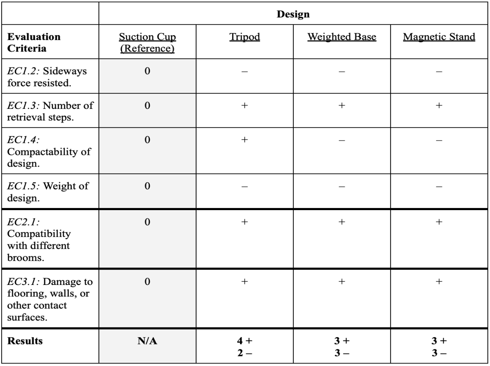
Fig 11: Pugh Chart evaluating alternative concepts against the Suction Cup baseline [5].Critique & EffectivenessThe Pugh chart was highly effective at eliminating my personal bias and highlighting the Suction Cup's specific weaknesses. It clearly showed that while the Suction Cup was strong in some areas, it suffered from limited compatibility (EC2.1), as it relied on fitting specific broomhead dimensions, whereas the Tripod scored a (+) in this category [13]. However, a major limitation of the Pugh Chart is its inefficiency. Because a Pugh chart only evaluates designs relative to a baseline, determining the true optimal design requires creating a new chart for every single concept to act as the reference [13]. It highlighted where designs differed, but didn't quantify by how much, and it treats all criteria equally rather than weighting safety metrics appropriately.
Impact on My Position in ContextThis tool fundamentally shifted my understanding of the "Timeout" phase of my design philosophy. I entered this convergence phase heavily biased, wanting to jump straight into executing my favored Suction Cup design. The Pugh Chart acted like an objective coach—it stripped away my ego and forced me to confront the fact that my "star player" had serious flaws compared to the Tripod. It taught me that convergence cannot be driven by intuition or attachment; it must be an evidence-based elimination process. Acknowledging these flaws didn't mean abandoning the design; it meant we knew exactly what trade-offs we were making when we ultimately selected it for its vastly superior force resistance [5].
Note to Future Self: Use Pugh Charts early in the "Timeout" phase as a quick, relative screening tool to eliminate clearly unviable concepts. However, to solve the time-consuming limitation of rotating baselines, graduate immediately to a Weighted Decision Matrix for final convergence. This allows for simultaneous, absolute evaluation across all designs and accounts for the fact that critical safety requirements must be weighted higher than convenience metrics.
Praxis II: Automated Wristband Applicator
Background & Opportunity
Balmy Beach Community Day Care serves 166 children in a fast-paced environment. During high-stress transitions like field trips, staff must manage rolling arrivals while maintaining strict 1:13 supervision ratios. Currently, staff must manually wrap, fasten, and cut wristbands for each child. This manual application takes an average of 22.7 seconds per child, creating severe bottlenecks, cognitive overload, and potential safety risks (using scissors near active kids) [11]. The opportunity is to improve the wristband application process within the daycare environment, ensuring a safer and more efficient transition for both staff and children.
Reframing & Key Requirements
We made the deliberate, challenging decision to center the design strictly around the child's experience and to make the device fully automated without changing the actual wristbands the daycare already uses [11]. Our key requirements included:
- Full Automation: The device must automatically wrap, fasten, and cut the wristband.
- Wristband Compatibility: The design must utilize the daycare's existing adjustable snap-closure ID wristbands [11].
- Application Efficiency: Must significantly reduce the current 22.7-second application time [11].
- Force Safety: The applied pressure on the child's wrist must remain safely below the 10 kPa threshold [11].
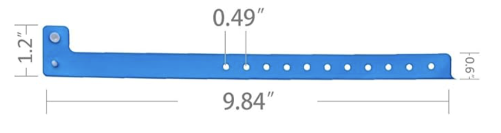
Divergence & Rapid Prototyping
Because the automation process was so complex, we broke the process down into sub-functions and diverged widely. To communicate these concepts clearly, we created "Pokémon Cards" outlining the stats, pros, and cons of our leading subsystem concepts [18].
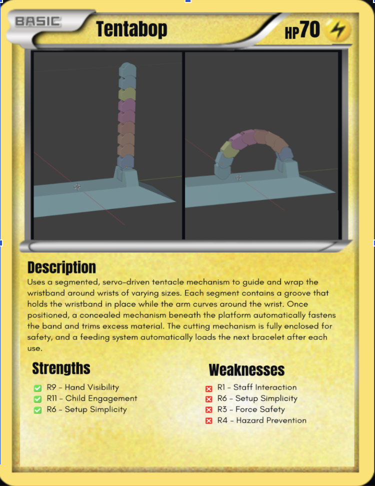
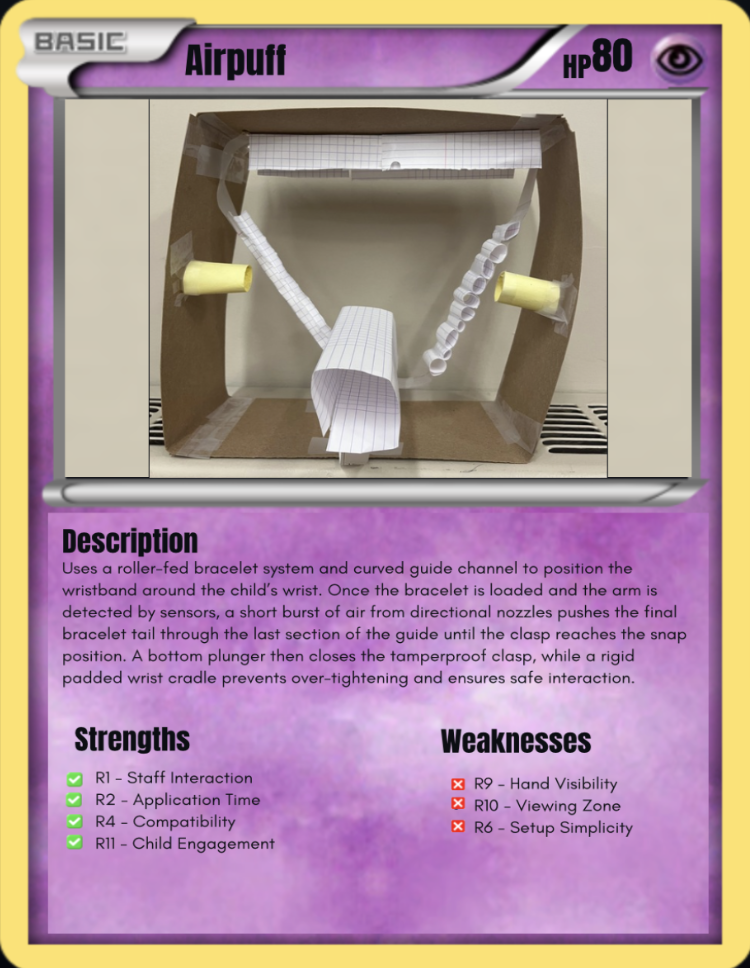
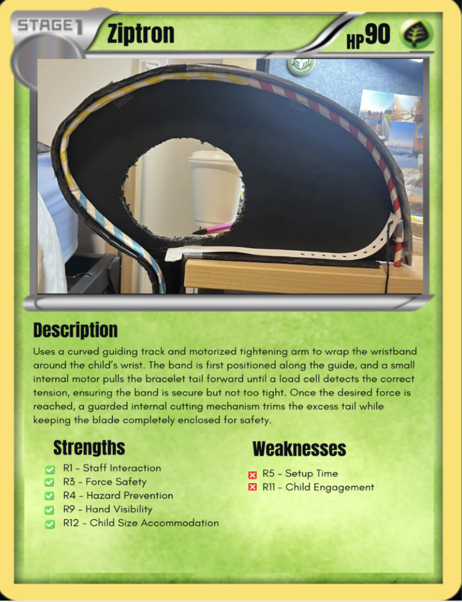
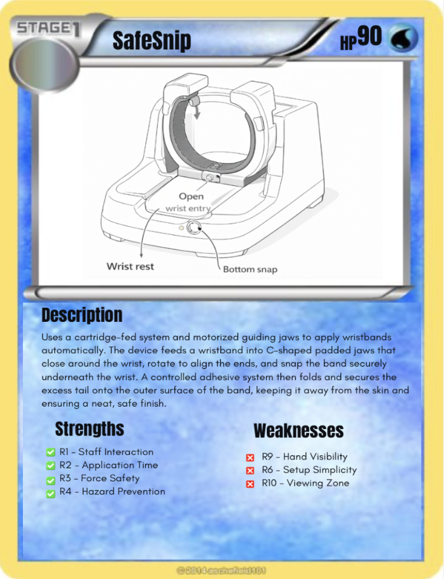
To break through our initial analysis paralysis, we relied heavily on rapid physical prototyping. By immediately translating our ideas from paper into low-fidelity cardboard models, we were able to physically visualize the mechanisms, test constraints, and quickly iterate on our designs without committing to detailed CAD too early.
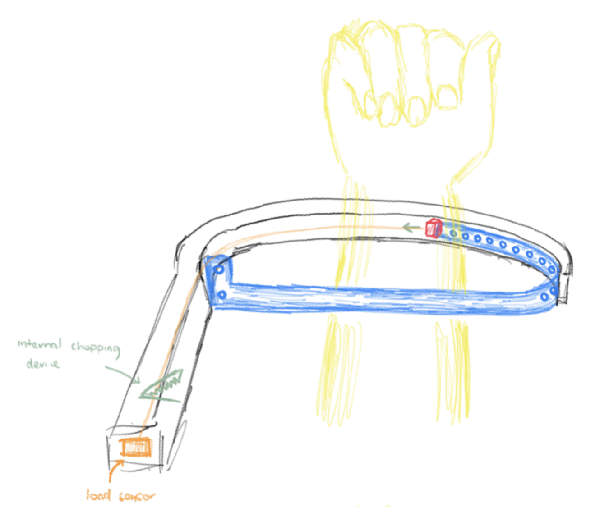
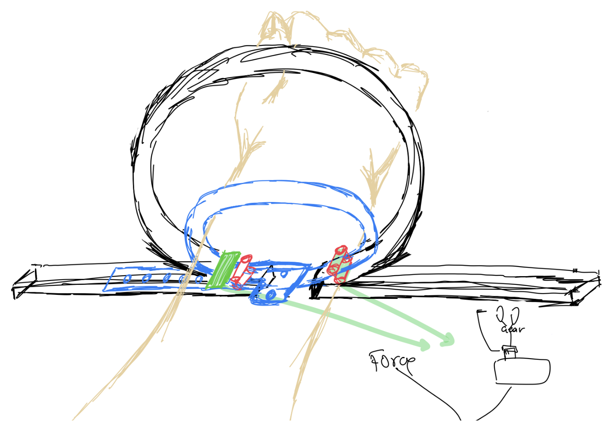
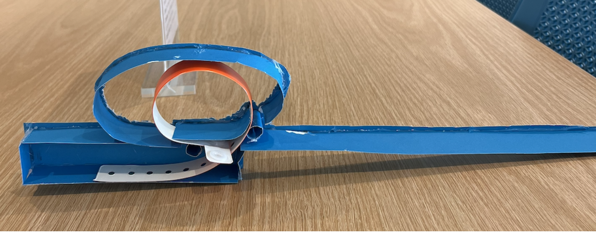
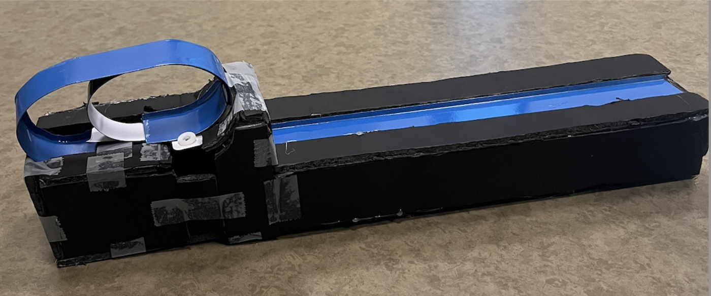
Converging & System Integration
Due to the complexity of the device, converging on a single holistic design immediately was impossible. Instead, we utilized Pairwise Comparisons to evaluate the mechanisms at the sub-function level (e.g., comparing feeding mechanisms against each other, wrapping mechanisms against each other). By systematically locking in the highest-scoring components for each function—based on our strict criteria for child safety and application speed—we combined these optimized parts to engineer our final holistic solution [11].
The Final Design: The Snap Buddy
The Snap Buddy is a fully automated wristband applicator designed to streamline daycare field trip preparations. By integrating optimized subsystems, the device executes a seamless application process:
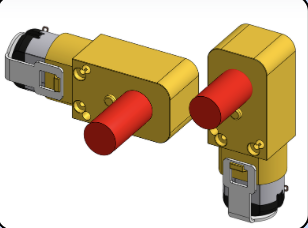
Friction Rollers
Powered by the DC motors, these friction rollers respectively feed the bracelet through the mechanism [18].
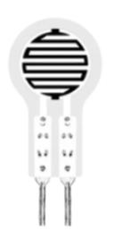
Thin Film Pressure Sensor
A sensor whose resistance changes with applied force. The Arduino reads this as a 0-1023 signal, which can be calibrated to estimate force [18].
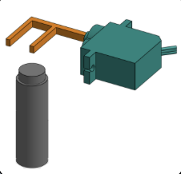
Buttoning Mechanism
A servo bends the bracelet tab into place, followed by a small piston that secures the button [18].
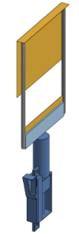
Cutting Mechanism
A linear actuator raises a razor blade that pushes the bracelet tail towards the button, then cuts the excess bracelet after the buttoning mechanism completes [18].
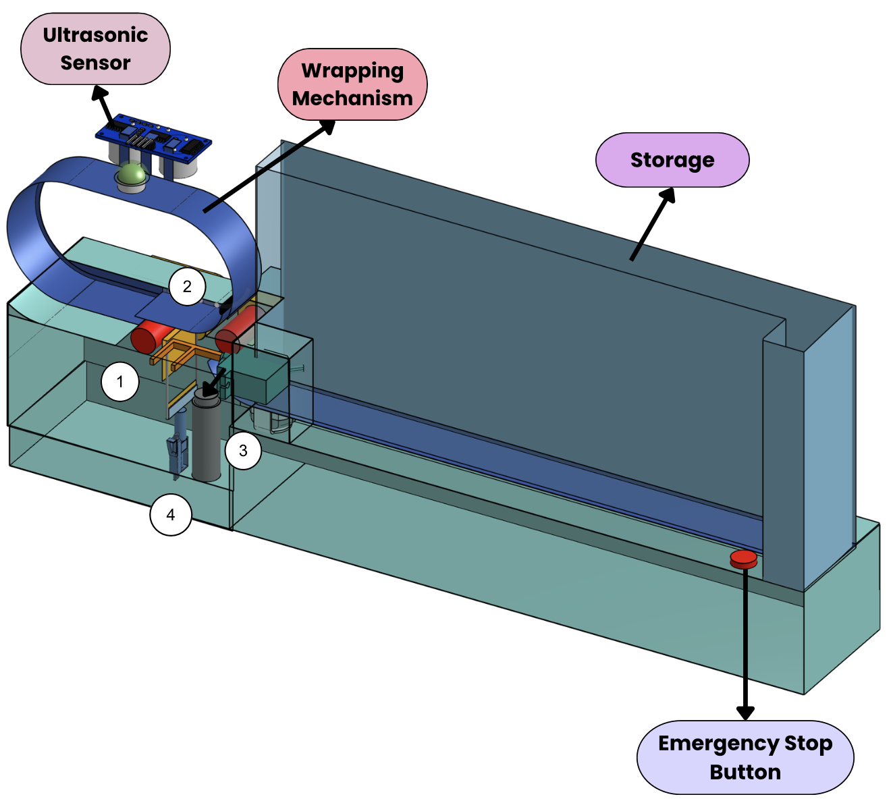
Crucially, our physical proxy tests verified that the Snap Buddy reduced the application time from 22.7 seconds down to 10.33 seconds [18]. Upon presenting this verified data to the daycare, they confirmed that if the high-fidelity prototype maintains this safety and efficiency, they are open to implementing it.
Influence of My Position & What I Learned
After Praxis I, I swung to an extreme: I prioritized planning so much that I hesitated to make concrete design decisions. I spent an immense amount of time researching and diverging on paper.
During Praxis II, I realized that theory only goes so far. I had to force myself to embrace the "Game" phase of my philosophy: I stopped over-planning and started sketching and building low-fidelity physical prototypes. This was a breakthrough. The physical prototypes immediately revealed real-world limitations that no amount of research could have shown me. It sent me back to the divergence phase, but this time with grounded, physical evidence. I learned that doing is a form of planning, and you must keep the stakeholder at the forefront of every iteration [18].
CTMFs Assessed (Praxis II)
-
1. Stakeholder Analysis
Description & Application
Stakeholder analysis in engineering design extends beyond merely listing individuals affected by a product; it requires active, empathetic engagement to uncover lived experiences, operational pain points, and latent needs. Rather than relying solely on secondary research, we anchored our Framing phase in direct contextual inquiry. For our Request for Proposal (RFP), we traveled directly to the community to engage with Balmy Beach Day Care staff [11]. Through extended conversations, follow-up emails, and Zoom calls with our primary contact, Christine, we identified that manual wristband application was a severe operational bottleneck. We also interviewed parents to understand their safety expectations [11].
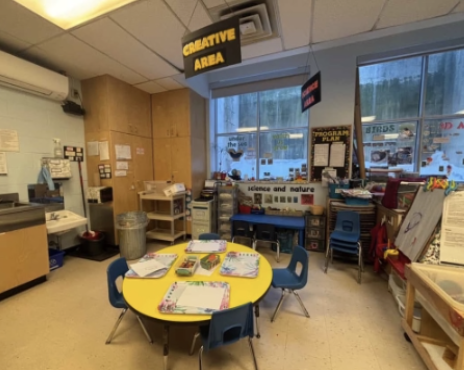
Fig 16: The 'Creative Area' inside the Balmy Beach Day Care preschool classroom, observed during our site visit [11].Interestingly, during these discussions, Christine initially stated she did not need the device to be portable. However, as engineers, we critically evaluated the transit environment and the reality of managing 166 children, leading us to deliberately override that constraint. We ultimately reframed the entire scope of the project to center strictly on the child's experience, ensuring the device alleviated the staff's burden without compromising mobility or safety [11].
Critique & EffectivenessPrimary research and stakeholder analysis form the absolute core of effective engineering design. Engaging directly with the daycare was incredibly effective because it prevented us from designing in a theoretical vacuum. It taught us that we, as designers, are also stakeholders—our personal investment and passion directly impact the quality of the solution. However, this process also highlighted a critical limitation: stakeholders do not always know exactly what they need (such as the portability requirement). Effective analysis requires listening empathetically but designing critically [11].
Impact on My Position in ContextAfter the heavily metric-driven, theoretical convergence of Praxis I, I felt somewhat disconnected from the human element of engineering. However, I actually attended Balmy Beach Day Care as a child, which gave me a profound personal connection to this project. Physically visiting the daycare and seeing the classrooms served as a powerful reminder of my core motivation: engineering design is ultimately about making a tangible difference. It re-inspired me. In the context of my "Volleyball Season" philosophy, this deep community engagement acted as the ultimate "Pre-Season" framing activity, ensuring our entire season was grounded in real human impact rather than abstract academic requirements.
Note to Future Self: Always conduct in-person primary research whenever possible; never design exclusively from behind a desk. Furthermore, remember that while you must listen to stakeholders, you must also use your engineering judgment to identify their latent needs. Only commit to designing solutions that hold true value and ignite your passion. -
2. Morphological Chart
Description
The Morphological Chart is a systematic divergence tool used to manage highly complex systems. Rather than attempting to brainstorm a complete, holistic product all at once, the chart forces designers to deconstruct the system into its essential sub-functions. It then acts as a matrix, allowing for targeted, independent ideation to generate multiple distinct options for each individual function.
Application in Praxis IIBecause fully automating the wristband application involved multiple sequential steps, attempting to brainstorm an all-in-one "machine" was overwhelming and stifled creativity. We utilized a Morphological Chart to deconstruct the device into five discrete sub-functions: measuring circumference, wrapping the band, buttoning the clip, cutting excess material, and confirming the application [11].
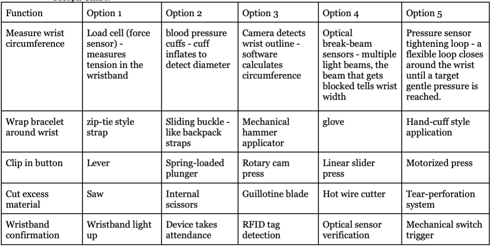
Fig 17: Morphological Chart breaking down the applicator's sub-functions [11].For example, instead of designing a whole machine, we generated targeted options just for "cutting," exploring internal scissors versus a hot wire cutter versus a guillotine blade [11]. We then generated separate options for "buttoning," comparing a rotary cam press against a linear slider [11].
Critique & EffectivenessThis tool was exceptionally effective. It is arguably the best diverging technique when dealing with a multifaceted design because it completely eliminates cognitive overload [11]. By focusing on one small mechanism at a time, we were able to generate a vast array of creative, highly specific ideas that we never would have discovered if we were fixated on the "big picture." However, the major limitation of a Morph Chart is that it ignores interface compatibility. Combining the "best" options from each row does not guarantee that those components will physically or electrically integrate well in a final assembly.
Impact on My Position in ContextMy experience with the Morph Chart represented a pivotal evolution in my "Volleyball Season" philosophy. In Praxis I, using the Lotus Blossom led to severe "idea bloat" and analysis paralysis because the divergence was too unstructured [16]. In Praxis II, I treated the Morph Chart as my primary divergence tool because it provided exactly what I needed: *intentional, bounded divergence* grounded in functional research [11].
It provided all the inspiration I needed without overwhelming me, allowing me to immediately transition into the "Game" phase (prototyping) [11]. It showed me how I was actively evolving into more "doing." I realized that you are far better off executing one highly intentional divergence session than attempting several disconnected methods that generate overly chaotic ideas [11].
Note to Future Self: Always use Morph Charts for highly complex, multi-step mechanical designs. However, ensure you conduct thorough research *before* filling out the chart so that your options are actually physically viable, and always follow up with immediate interface analysis to ensure the chosen sub-components can actually connect to one another [11]. -
3. Pairwise Comparison
Description
Pairwise Comparison is a structured decision-making tool that evaluates concepts by pitting them against one another in a series of direct, one-on-one matchups. Rather than trying to rank all options simultaneously against multiple criteria, this method forces the designer to make binary choices (which option is better?), simplifying complex evaluations and revealing clear relative preferences.
Application in Praxis IIDue to the massive number of permutations generated by our Morph Chart, converging on an entire device at once was impossible. Instead, we adapted the Pairwise Comparison tool to evaluate the mechanisms at the sub-function level [11].
For example, when evaluating the tension sensing mechanism, we needed a way to ensure the wristband was tight enough without exceeding our 10 kPa safety limit. We compared four options: a Load Cell, a Stepper Motor, a Camera, and a Thin Film Pressure Sensor (FSR).
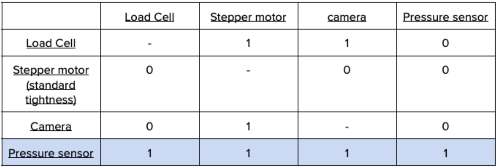
Fig 18: Pairwise Comparison matrix used to evaluate tension measurement mechanisms [11].While a Load Cell offers high scientific precision, it requires complex calibration [11]. A Stepper Motor applies force but cannot actively measure it, and a Camera demands heavy computational resources for image processing [11]. In contrast, the Pressure Sensor (FSR), despite having lower absolute precision, won every head-to-head matchup. It was simpler to wire, more cost-effective, and directly provided the exact feedback we needed—detecting when the band was "snug" [11].
Critique & EffectivenessThis granular application of Pairwise Comparison was incredibly effective and vastly less time-consuming than the Pugh Charts we used in Praxis I [11]. Instead of constantly rotating a baseline design, Pairwise forces a direct, binary choice that prevents indecision. It also bridges the gap between raw data and engineering intuition—you must justify why one component beats another, heavily relying on secondary research to defend the choice [11].
Impact on My Position in ContextThis tool fundamentally enhanced my understanding of the "Timeout" phase of my design philosophy, blending perfectly into the concept of the "Off-Season." In a volleyball off-season, coaches don't just look at the final scoreboard; they break down individual player matchups and iterate on specific mechanics to build the ultimate starting lineup. Pairwise comparison allowed me to apply this exact mindset to our engineering design [11].
Instead of evaluating the whole machine, I systematically compared individual 'players'—like the load cell versus the pressure sensor. It taught me that the "best" solution isn't always the most technologically advanced; it's the one that best fits the specific role within the team. Furthermore, it reinforced that convergence is highly iterative. Using both intuition and data to realize a load cell was unnecessarily complex forced us to pivot back to divergence and explore simpler pressure sensors [11].
Note to Future Self: Pairwise comparison is highly useful for convergence as it is not time-consuming and leads to similar conclusions as a Pugh chart [11]. Default to function-level Pairwise Comparison when dealing with complex, multi-component systems. Always ensure each binary choice is justified by rigorous research rather than just gut feeling. -
4. Physical Prototyping
Description & Application
Physical prototyping is a core component of Representing in the FDCR model. It bridges the gap between theoretical engineering math and real-world mechanics. For Praxis II, instead of just sketching concepts on paper, we began building low-fidelity physical prototypes early in the design cycle [270, 271, 274].
Crucially, our framing required us to determine the exact optimal dimensions for the wristband application mechanism. We were constrained by the fact that the wristband loop needed a specific starting circumference of 21.9 cm to allow a child's hand to easily fit through [273]. We couldn't accurately test this constraint through theoretical drawings; we had to literally tape bands together, build physical proxy tracks, and "mess around" with the dimensions in the physical world to lock in those tolerances [272, 273]. We built several iterative versions of these low-fidelity models, which eventually culminated in the assembly of our final functioning physical prototype prior to CAD modeling [274].


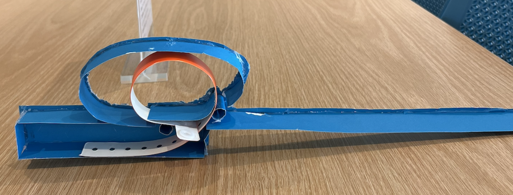
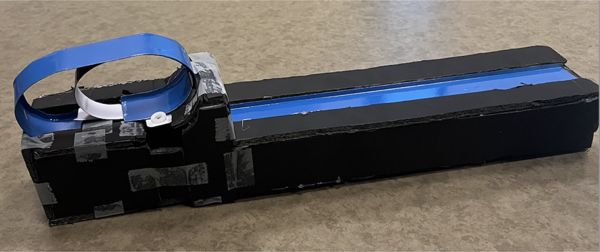
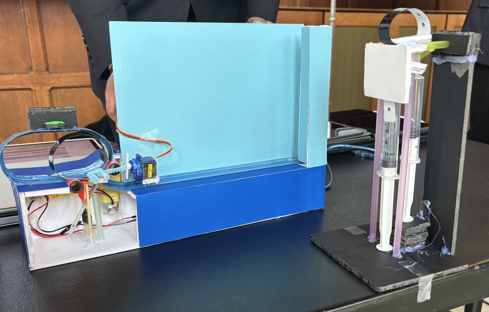
Fig 19: The evolution of our physical prototyping, moving from early dimensional testing to our final assembled mechanism [274].Critique & EffectivenessBuilding early was incredibly effective. Physical prototypes are vital for uncovering mechanical limitations that you simply cannot anticipate during abstract divergence and convergence [276, 277]. They also serve as powerful visual tools for explaining complex mechanisms to non-technical stakeholders [276].
However, we identified a major procedural flaw in our workflow: we built our final, complex physical prototype before we made the final CAD model [274, 278]. Ideally, CAD should precede the final physical build. A detailed CAD model allows you to visualize and verify precise geometries, preventing wasted materials and time during the final physical assembly [278].
Impact on My Position in ContextThis experience deeply affected my "Volleyball Season" design philosophy. As a highly visual learner and worker, having a physical object in front of me provided a level of clarity that paper sketches simply couldn't offer [280]. Stepping onto the court to physically "play the game" (build) effectively broke my analysis paralysis.
So why did we skip the CAD phase initially? I realized it was rooted in my own vulnerability: I was nervous. I had never used CAD before, so I didn't want to mess it up, and instead fell back into my comfort zone of physical crafting [281]. Acknowledging this fear was a massive step in my engineering growth. Now that I have gained proper CAD experience through this project, I can integrate it confidently into my process [281].
Note to Future Self: Use low-fidelity physical prototypes early and often as a tool for rapid visualization and communication [285]. However, strictly enforce a "CAD-first" rule before committing to the final physical prototype [284]. In the next project, aim to elevate your fabrication skills to produce a true high-fidelity prototype [286]. -
5. Stakeholder Validation
Description & Application
Engineering design operates in a continuous loop, and validation is the critical final check against reality. Validation answers the ultimate question: does this device actually work for the people who need it? After assembling our near-final physical prototype, we returned directly to Balmy Beach Day Care to conduct field testing with our actual users.
We tested strict physical constraints—such as verifying that the largest child could comfortably fit their hand through the wristband loop (Requirement 7). Beyond physical metrics, we evaluated emotional and psychological engagement. We observed the children interacting with the device's video and color feedback, explicitly asking if the mechanism frightened them. The children were engaged and unafraid, and our primary stakeholder, Christine, confirmed she liked the concept and would be willing to actively incorporate the device into their routines.
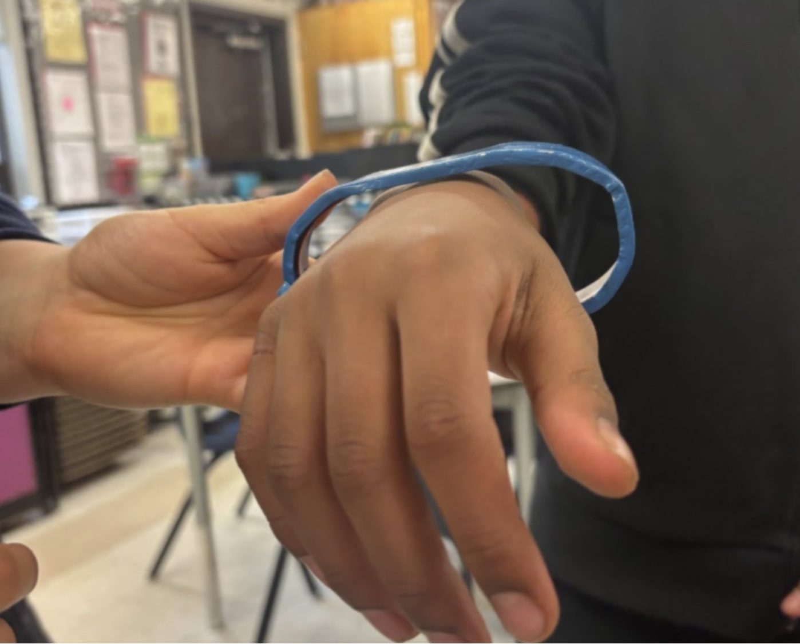
Fig 20: Conducting stakeholder validation to ensure the wristband loop comfortably fits the largest child [292].Critique & EffectivenessAn engineering design, no matter how technically brilliant or mathematically verified, is fundamentally useless if it does not serve its intended purpose or solve the root problem for the user. Going back to the daycare was absolutely necessary to measure our true effectiveness. While calculations can prove a device is safe, only field validation can prove if it is actually helpful, reduces staff burden, and engages children effectively.
Impact on My Position in ContextThis final validation phase was incredibly inspirational and provided profound clarity. Throughout the rigorous "Practice" and "Game" phases of calculating, building, and converging, it is easy to get lost in the technical weeds and forget the human element. Returning to the daycare brought my entire engineering journey full circle back to my core motivation: making a tangible, positive difference. It served as a powerful reminder that we aren't just engineering for a grade; we are structuring disorder to improve the daily lives of real people.
Note to Future Self: Always prioritize stakeholder validation, but strive to integrate it earlier and more frequently in the design process. Do not wait until the prototype is nearly finished to seek user feedback; continuous, iterative validation ensures the project never strays from its fundamental purpose.